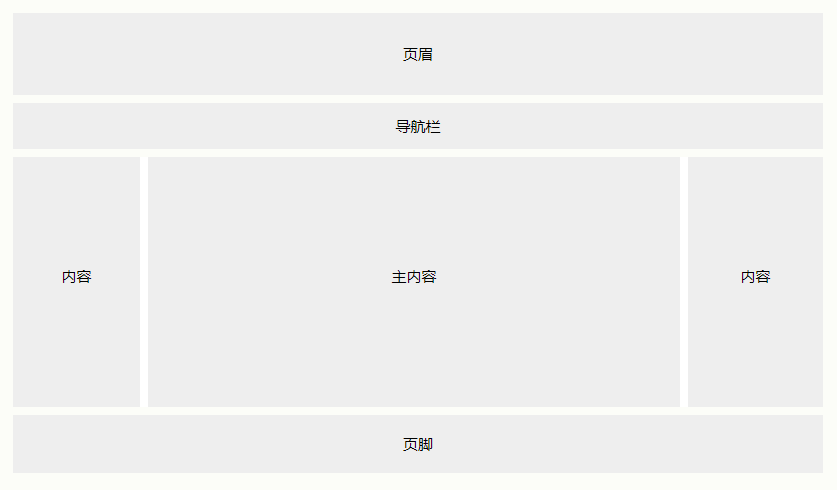
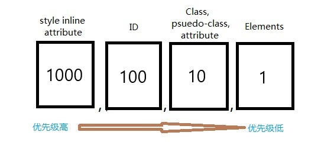

网站通常分为页眉、菜单、内容和页脚，以下结构是最常见的结构之一：EG
CSS有几种不同的表示长度的单位，长度单位有两种类型：绝对长度和绝对长度。
绝对长度单位是固定的，用任何一个绝对长度表示的长度都将恰好显示为这个尺寸。
| 单位 | 描述 |
|---|---|
| cm | 厘米 |
| mm | 毫米 |
| in | 英寸(1in = 96px = 2.54cm) |
| px | 像素(1px = 1/96 in) |
| pt | 点(1pt = 1/72 in) |
| pc | 派卡(1pc = 12 pt) |
相对长度单位规定相对于另一个长度属性的长度。相对长度单位在不同渲染介质之间缩放表现得更好。
| 单位 | 描述 |
|---|---|
| % | 相对于父元素 |
| em | 它是描述相对于应用在当前元素的字体尺寸，所以它也是相对长度单位。一般浏览器字体大小默认为16px，则2em == 32px； |
| ex | 依赖于英文字母小 x 的高度(极少使用) |
| ch | 相对于 "0"（零）的宽度 |
| rem | rem 是根 em（root em）的缩写，rem作用于非根元素时，相对于根元素字体大小；rem作用于根元素字体大小时，相对于其出初始字体大小。 |
| vw | viewpoint width，视窗宽度，1vw=视窗宽度的1% |
| vh | viewpoint height，视窗高度，1vh=视窗高度的1% |
| vmin | vw和vh中较小的那个 |
| vmax | vw和vh中较大的那个。 |
如果有两条或两条以上指向同一元素的冲突 CSS 规则，则浏览器将通过计算选择器的权重来决定哪个选择器将获得优先权去覆盖其他选择器的样式设定
以下四种类别定义了选择器的特异性级别：
| 选择器 | 级别 |
|---|---|
| 行内样式 | 行内（内联）样式直接附加到要设置样式的元素。实例：<h3 style="color: red;">...<h3> |
| ID | ID选择器是页面元素的唯一标识符，如#div |
| 类、属性和伪类 | 包括 .classes、[attributes] 和伪类，例如：:hover、:focus 等 |
| 元素和伪元素 | 包括元素名称和伪元素，比如 h1、div、::before 和 ::after。 |
从 0 开始，为 style 属性设置为1000点，为每个 ID 添加 100，为每个属性、类或伪类添加 10，为每个元素名称或伪元素添加 1。

实例：
A: h1
B: #content h1
C: <div id="content"><h1 style="color: #ffffff">Heading</h1></div>